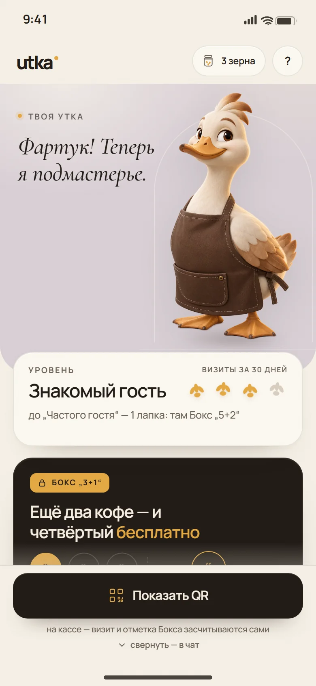
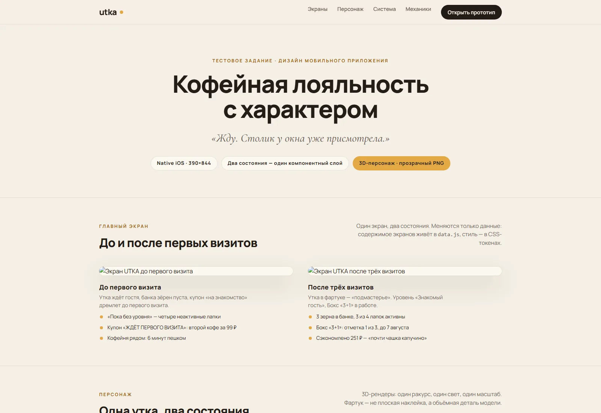
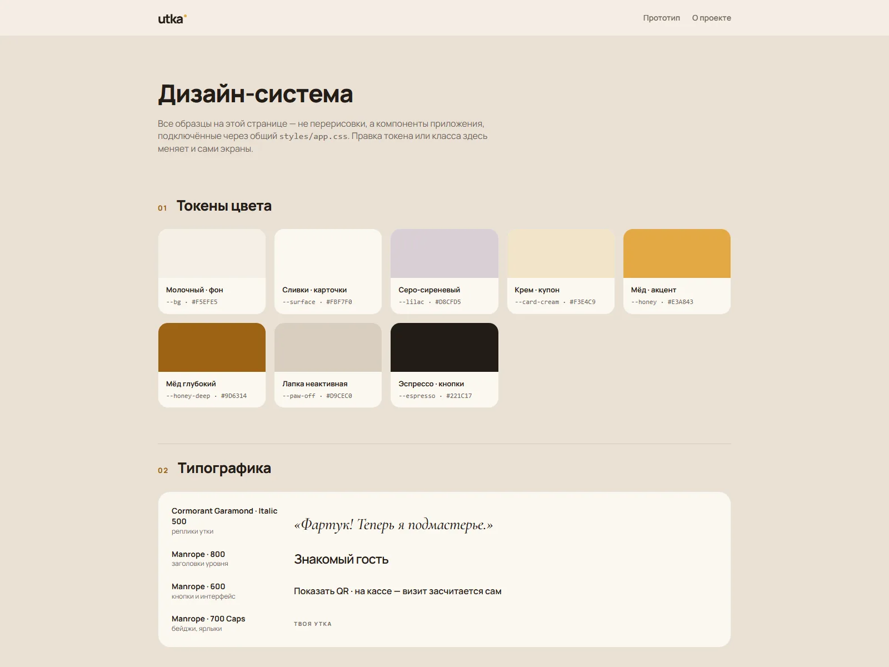

Utka
Мобильное приложение лояльности кофейни с 3D-уткой и двумя состояниями программы.


Задача
Собрать премиальный мобильный экран лояльности кофейни в двух состояниях: до первого визита и после трёх. Один компонентный слой, два набора данных, без Figma — сразу в HTML/CSS/JS.
Один экран — два состояния
Гость видит пустую банку зёрен, четыре неактивные лапки и купон на знакомство. Постоянный гость — три зёрнышка, уровень «Знакомый гость», прогресс к «Частому гостю» и Бокс «3+1».
Тексты и данные живут в data.js, визуальные правила — в CSS-токенах, переключение состояния доступно по клавишам 1/2 и через параметр URL.
3D-персонаж
Один рендер утки в двух версиях: фартук добавлен к той же модели, сохранены ракурс, свет и масштаб. Персонаж не спорит с интерфейсом и остаётся его частью, а не наклейкой.
Механики
- QR-визит: отметка на кассе, без ручного ввода.
- Купоны и Бокс «3+1» с честным прогрессом.
- Банка зёрен, чат и помощь — шторки с клавиатурной доступностью.
- Два состояния через data.js, без дублирования компонентов.
- Живая дизайн-система на system.html и презентация на about.html.

